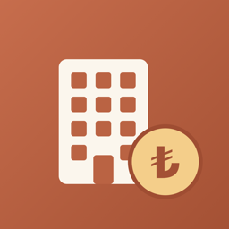

Kira TakipKullanım Koşulları
Son güncelleme: 3 Kasım 2026
Kira Takip'i ("uygulama") indirerek veya kullanarak bu koşulları kabul etmiş olursunuz. Uygulamanın kullanımı ayrıca Apple'ın Standart Son Kullanıcı Lisans Sözleşmesi (EULA)'na tabidir. Bu koşullarla EULA arasında çelişki olursa EULA geçerlidir.
1. Hizmet
Uygulama; daire, kiracı, kira, zam, depozito ve aidat kayıtlarınızı tutmanıza ve takip etmenize yardım eden bir kayıt aracıdır. Kayıtlar yalnızca cihazınızda saklanır.
2. Ücretsiz kullanım ve abonelikler
- Toplam 5 daireye kadar uygulama ücretsizdir; tüm özellikler açıktır.
- Daha fazla daire için aylık abonelik paketleri sunulur: 6–10 daire, 11–15 daire, 16–20 daire ve 21 ve üzeri daire. Güncel fiyatlar uygulama içinde gösterilir.
- Ödeme, satın alma onayıyla Apple hesabınızdan tahsil edilir.
- Abonelik, dönem bitiminden en az 24 saat önce iptal edilmedikçe her ay otomatik olarak yenilenir ve yenileme ücreti dönem bitiminden önceki 24 saat içinde tahsil edilir.
- Aboneliğinizi Ayarlar > Apple Hesabı > Abonelikler bölümünden yönetebilir veya iptal edebilirsiniz. İptal, mevcut dönemin sonunda geçerli olur.
- İade talepleri Apple'ın iade politikasına göre Apple tarafından değerlendirilir.
- Abonelik sona erse de verileriniz silinmez; yalnızca paket sınırının üzerinde yeni daire eklemek kapanır.
3. Verileriniz ve yedekleme
Verileriniz yalnızca cihazınızda tutulur; geliştiricinin bu verilere erişimi yoktur ve kurtaramaz. Uygulamanın silinmesi, cihazın kaybolması veya bozulması halinde verilerinizin kaybolmaması için Ayarlar'daki Yedeği dışa aktar özelliğiyle düzenli yedek almanız sizin sorumluluğunuzdadır.
4. Kişisel verilerin işlenmesi
Uygulamaya kiracılarınıza veya başka kişilere ait kişisel veriler girerseniz, bu verilerin hukuka uygun işlenmesinden (ör. 6698 sayılı KVKK kapsamındaki aydınlatma ve güvenlik yükümlülükleri) siz sorumlusunuz.
5. Sorumluluğun sınırlandırılması
- Uygulamadaki hesaplamalar (borç, zam tarihi, aidat borcu vb.) girdiğiniz kayıtlara dayanır ve bilgi amaçlıdır; hukuki, mali veya vergi danışmanlığı yerine geçmez.
- Kira artış oranları gibi yasal sınırlara uyulması kullanıcının sorumluluğundadır.
- Uygulama "olduğu gibi" sunulur. Yürürlükteki mevzuatın izin verdiği ölçüde, uygulamanın kullanımından veya kullanılamamasından doğan dolaylı zararlardan ve veri kayıplarından geliştirici sorumlu tutulamaz.
6. Değişiklikler
Bu koşullar güncellenebilir; güncel hali bu sayfada yayımlanır. Güncellemeden sonra uygulamayı kullanmaya devam etmeniz, güncel koşulları kabul ettiğiniz anlamına gelir.